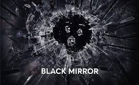

Merhaba.Ben Halenur Gençcelep.Bilim kurgu dizileri izlemeyi severim.Web geliştirmeye ilgiliyim.
Black Mirror, İngiliz Channel 4 kanalında yayınına 2011 tarihinde başlayan dizidir. Kazandığı başarı ve popülaritesi sonrasında 2015 yılında Amerikan Netflix tarafından yayın hakları satın alınmıştır
Modern toplumun ve bu toplum içindeki bireyin problemlerini, yeni teknolojilerin getirdiklerini ve mevcut dünya düzenindeki siyaset, medya, sanat ilişkilerini yer yer hiciv ile yer yer de ögelerine başvurarak yorumlamaktadır.
